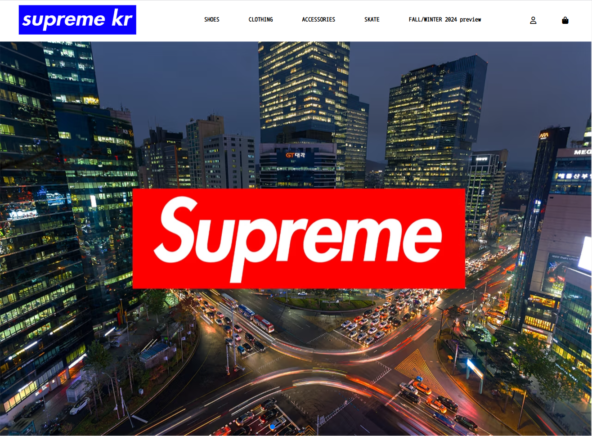

SupremeRenewal
저의 첫 포트폴리오 자기소개 페이지로 애플의 웹 페이지를 모티브로 제작 하였고
새로운 기술을 적용하여 끊임없이 이어나가고 있습니다.
프로젝트 인원 : solo
저의 첫 포트폴리오 자기소개 페이지로 애플의 웹 페이지를 모티브로 제작 하였고
새로운 기술을 적용하여 끊임없이 이어나가고 있습니다.
프로젝트 인원 : solo


미디어 쿼리를 이용하여 반응형 웹 페이지를 구현 하였으며
소형기기(~480px),모바일(~768px), 테블릿(768 ~ 1024px), PC(1024px ~)에 맞춰 최적화된 웹 페이지를 구현하였습니다.